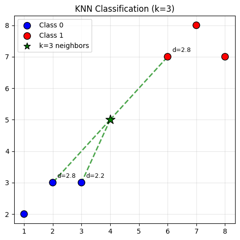

import numpy as np
def dist(x, y, axis=0):
if not isinstance(x, np.ndarray): x, y = np.array(x), np.array(y)
return np.sqrt(((x - y) ** 2).sum(axis=axis, keepdims=True))
dist([1,1],[1,1]), dist([1,1],[1,2])(array([0.]), array([1.]))Risheek kumar B
March 15, 2024
Imagine you just moved to a new city — let’s say Tokyo. You’re hungry, you don’t speak the language, and Google Maps is down. What do you do? You look around. Three ramen shops nearby are packed with locals. One fancy place across town has a 5-star rating online. You go with the ramen — your nearest neighbors already made the decision for you.
That’s KNN. To classify a new data point, look at its k nearest neighbors in the training data and take a majority vote.
No training phase. No model to fit. No assumptions about the data. Just store everything and compute distances when you need a prediction. It’s the algorithm equivalent of “when in Rome, do as the Romans do.”
Let’s build it step by step — like assembling IKEA furniture, but with fewer leftover screws. First, we need a way to measure distance between two points — the Euclidean distance (straight-line distance from geometry class):
(array([0.]), array([1.]))Now the KNN classifier itself — compute distances, find the k nearest, take a majority vote:
X_train = np.array([[1,2],[2,3],[3,3],[6,7],[7,8],[8,7]])
y_train = np.array([0, 0, 0, 1, 1, 1]) # two clusters: class 0 and class 1
x_query = np.array([2.5, 3.0])
k = 3
def knn_predict(X_train, y_train, x_query, k):
"""Classify x_query using k nearest neighbors."""
dists = dist(x_query, X_train, axis=1).squeeze()
top_k = dists.argsort()[:k]
labels = y_train[top_k]
return np.bincount(labels).argmax()
knn_predict(X_train, y_train, x_query, k=3)np.int64(0)Result: Class 0 ✅ — makes sense, since [2.5, 3.0] is geometrically close to the class 0 cluster.
Caveat: np.bincount requires non-negative integer labels (0, 1, 2, …). For arbitrary labels, use collections.Counter for the majority vote instead.
Words are nice, but a picture is worth a thousand distances. Let’s plot the two clusters, a query point sitting between them, and draw lines to its k nearest neighbors:
import matplotlib.pyplot as plt
X_train = np.array([[1,2],[2,3],[3,3],[6,7],[7,8],[8,7]])
y_train = np.array([0, 0, 0, 1, 1, 1])
x_query = np.array([4, 5])
k = 3
dists = np.sqrt(((X_train - x_query)**2).sum(axis=1))
top_k = dists.argsort()[:k]
fig, ax = plt.subplots(figsize=(5, 5))
colors = ['blue' if c == 0 else 'red' for c in y_train]
ax.scatter(X_train[:,0], X_train[:,1], c=colors, s=100, edgecolors='k', zorder=3)
for i in top_k:
ax.plot([x_query[0], X_train[i,0]], [x_query[1], X_train[i,1]], 'g--', lw=2, alpha=0.7)
ax.annotate(f'd={dists[i]:.1f}', xy=(X_train[i,0]+0.15, X_train[i,1]+0.15), fontsize=9)
ax.scatter(*x_query, c='green', s=200, marker='*', edgecolors='k', zorder=4)
ax.scatter([], [], c='blue', s=100, edgecolors='k', label='Class 0')
ax.scatter([], [], c='red', s=100, edgecolors='k', label='Class 1')
ax.scatter([], [], c='green', s=100, marker='*', edgecolors='k', label=f'k={k} neighbors')
ax.set_title(f'KNN Classification (k={k})'); ax.legend(); ax.grid(True, alpha=0.3)
plt.tight_layout(); plt.show()
Imagine you’re on a game show. You need to guess the price of a car. You can ask 1, 5, or 50 audience members.
In general, k controls how smooth or noisy your predictions are:
In practice, you don’t guess k. You use cross-validation: train KNN with k=1, 3, 5, 7,…, evaluate each on a validation set, and pick the one with the best accuracy.
KNN isn’t just for classification. For regression, instead of taking a majority vote, you take the mean of the k neighbors’ target values. Think of it like estimating the temperature: you look at the k closest weather stations and average their readings.
In standard KNN, all k neighbors vote equally — democracy! But sometimes your closest neighbor’s opinion should matter more than one 10 streets away. In weighted KNN, closer neighbors get more influence — typically using inverse distance as weight. It’s the difference between asking 5 random coworkers for lunch advice vs. asking the one sitting right next to you plus 4 others.
def knn_predict_weighted(X_train, y_train, x_query, k):
"""Weighted KNN: closer neighbors get more vote power."""
dists = dist(x_query, X_train, axis=1).squeeze()
top_k = dists.argsort()[:k]
weights = 1 / (dists[top_k] + 1e-8) # avoid division by zero
labels = y_train[top_k]
# Weighted vote for each class
classes = np.unique(y_train)
scores = {c: weights[labels == c].sum() for c in classes}
return max(scores, key=scores.get)KNN produces piecewise linear decision boundaries — think of them like country borders drawn by neighbors voting on which side of the line they belong to. As k decreases, the borders get jagged and weird (overfitting — like a gerrymandered district). As k increases, borders smooth out into clean curves (underfitting — like someone drew them with a ruler). Sketch this in your mind — remember: small k = squiggly, large k = smooth.
You must normalize features before using KNN. Here’s a cautionary tale:
Suppose you’re matching people by similarity for a roommate app.
Without scaling, income differences of $10,000+ completely drown out cleanliness differences of a few points. KNN will pair you with people who earn the same as you — even if they never wash the dishes.
Standard fix: standardize each feature to zero mean and unit variance, or min-max scale to [0, 1]. Now both features contribute equally, and you get a roommate who matches you on both axes.
Picture this: you’re in a dark room looking for your keys. In 1D (a hallway), you just walk forward — easy search. In 2D (a room), it’s harder but manageable. In 3D (a building), tougher. Now imagine a 100D building — every direction you look, the space stretches out forever, and your keys might as well be nowhere. Worse, every pair of keys looks roughly the same distance away.
That’s the curse of dimensionality. As dimensions increase, the volume of the space explodes exponentially. A unit hypersphere in high dimensions has essentially zero volume relative to the enclosing cube — data points end up near corners/edges, and pairwise distances become nearly equal.
The result: “nearest” neighbor becomes nearly meaningless in high dimensions.
Common misconception: Changing the distance metric (e.g. to cosine similarity) fixes this. It doesn’t — even angles concentrate around 90° in high dimensions.
The actual fix: Reduce dimensionality first (PCA or pretrained embeddings), then apply KNN.
Different situations call for different notions of “closeness”:
| KNN | Most ML algorithms | |
|---|---|---|
| Training | O(1) — just store data | O(expensive) |
| Prediction | O(Nd) — expensive | O(1) — just apply model |
This is the reverse of most ML algorithms. KNN is “lazy” — it shows up to the exam having done zero prep, then frantically flips through the textbook during the test. This matters when you have large datasets or need real-time predictions — you can’t afford to flip through a million pages every time someone asks a question.
Scalability fixes: - KD-trees / Ball trees — spatial indexing structures, fast for low dimensions (< ~20) - Approximate Nearest Neighbor (ANN) — e.g. FAISS, HNSW; trades exact results for massive speedups
KNN is a great hammer, but not everything is a nail. Steer clear when: